Demo and Testing
The demo model implements the AWS security solution using GuardDuty, Lambda, SNS and EventBridge. Two EC2 servers are created, a hacker-ec2 with a suspicious IP and a user-ec2 scanning the hacker’s port. When GuardDuty detects a threat, EventBridge triggers Lambda to take automatic action. SNS sends an alert notification to the administrator via email, helping to monitor and respond quickly to security events.
Connecting EC2
- Access the EC2 page
- We go to the EC2 machine user-ec2 select connect
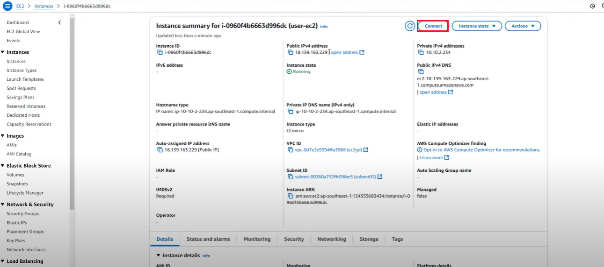
- Go to SSH client
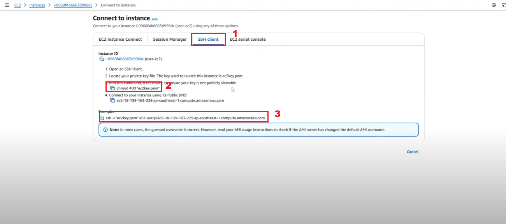
- Go to the Keypair folder that you downloaded when creating the EC2 machine in item 3
- Right-click and select Open Git Bash Here
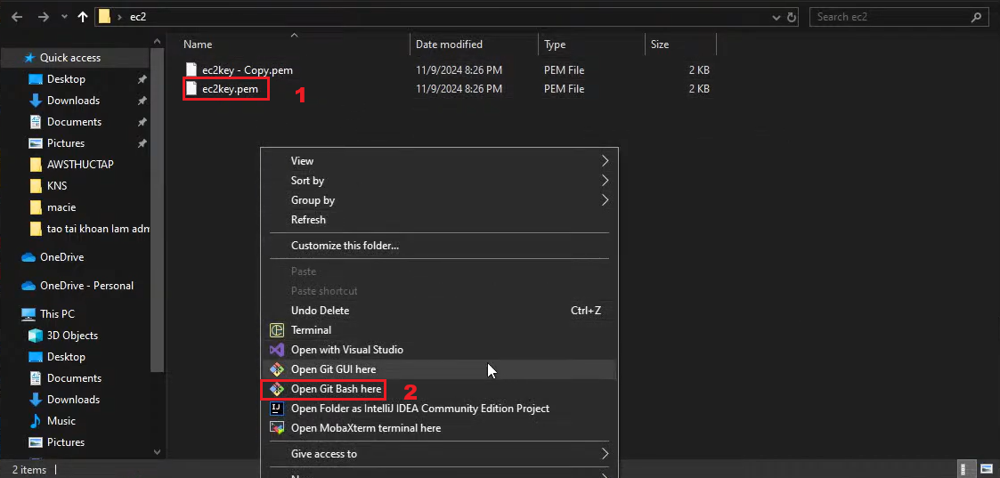
- Paste in the things copied from SSH client in item 2 enter
- Type yes
- Display as in image 4 is successful ssh
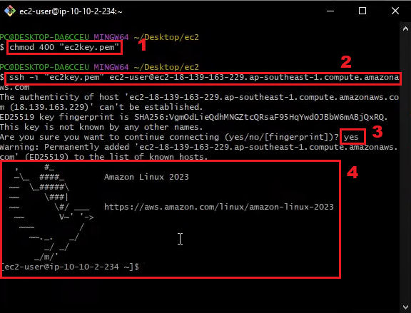
- We proceed to ping the machine’s ip hacker-ec2
vi gd-postscan.sh
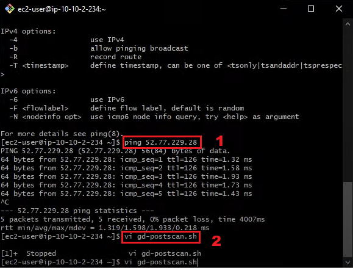
6. Fill in the code to automatically post scan 10 times at the machine’s ip hacker-ec2
for j in {1..10}
do
sudo map -sT 52.77.229.28
done
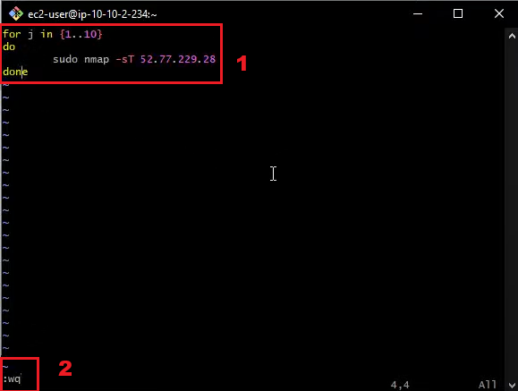
- We fill in the command
sudo yum install -y nmap to install fully nmap, display Complete is successful
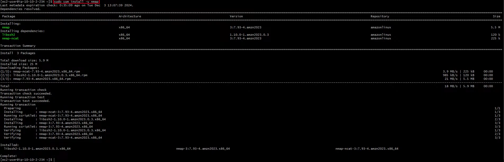
- We use the command
./gd-postscan.sh
- If there is an error, grant permission to the file with the command
chmod +x ./gd-postscan.sh
- Rerun the command
./gd-postscan.sh
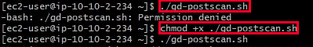
- Display like this means the scan is successful
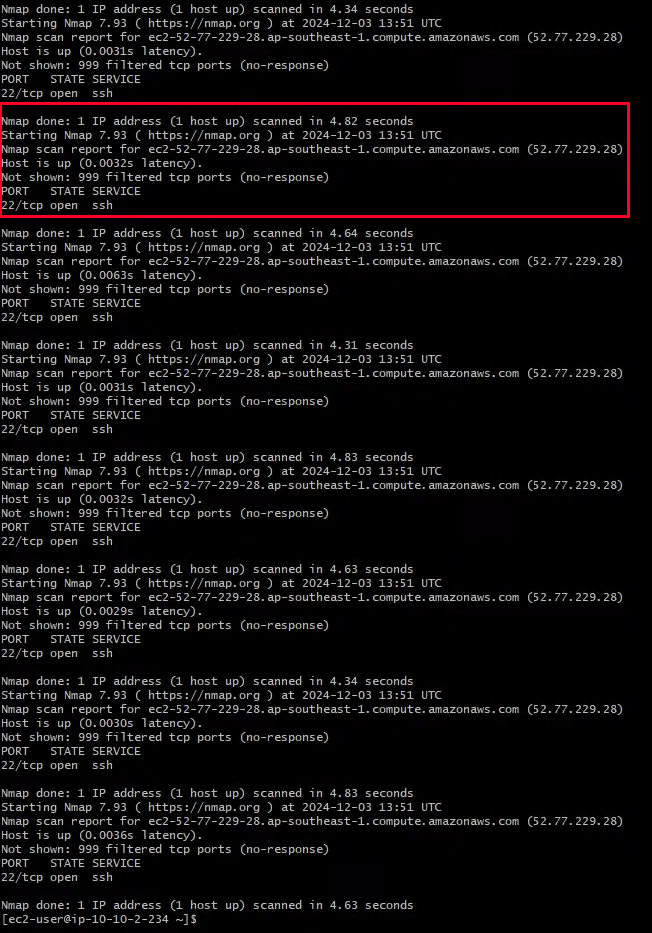
Result
- After waiting for a while for GuarduDuty to detect as shown
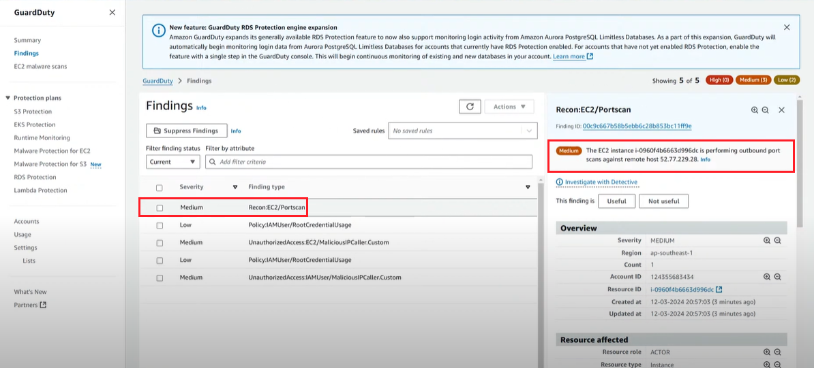
- At the same time, you will also receive an email as shown in the image showing full information
- Information:
-
- Version: “2.0” - GuardDuty finding format version.
-
- Detail type: “GuardDuty Finding” - Detection type from GuardDuty.
-
- Source: “aws.guardduty” - Service that generated the notification.
-
- Time: “2024-12-03T14:00:00Z” - Time of event detection.
-
- Region: “ap-southeast-1” - Region where the event occurred (Southeast Asia).
-
-
-
- ID: “i-0c9667b56b86b2b8c”
-
-
- Launch time: “2024-12-03T14:00:00Z”
-
- Private DNS name: “ip-10-0-234-90.ap-southeast-1.compute.internal”
-
- Public DNS name: “ec2-13-239-163-229.ap-southeast-1.compute.amazonaws.com”
-
- Public IP: “13.239.163.229”
-
- AMI ID: “ami-0935e2aed25ad7b6c”
-
- Image Description: “Amazon Linux 2023 AMI 2023.0.20230920.0”
-
- Type: “NETWORK_CONNECTION”
-
- Connection Direction: “OUTBOUND”
-
- IP Address: “52.77.229.28” - Suspected IP address (destination).
-
- Organization: “AMAZON-AP” (Amazon Asia-Pacific Network).
-
-
- Scanned ports: 5555, 6666, 888, 4883, 8733, 304, 8998, 1024, 42, 43, 375, 152.7000
-
- Severity: 5 - Medium severity.
-
- Count: 1 - Number of detections.
-
- Description: “The EC2 instance … is performing outbound port scans against remote host 52.77.229.28.”
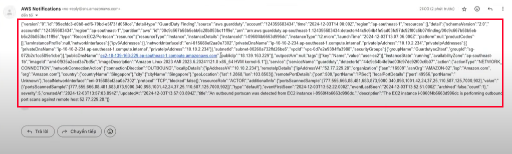
- And the EC2 machine user-ec2 was shut down when GuardDuty detected suspicious behavior.
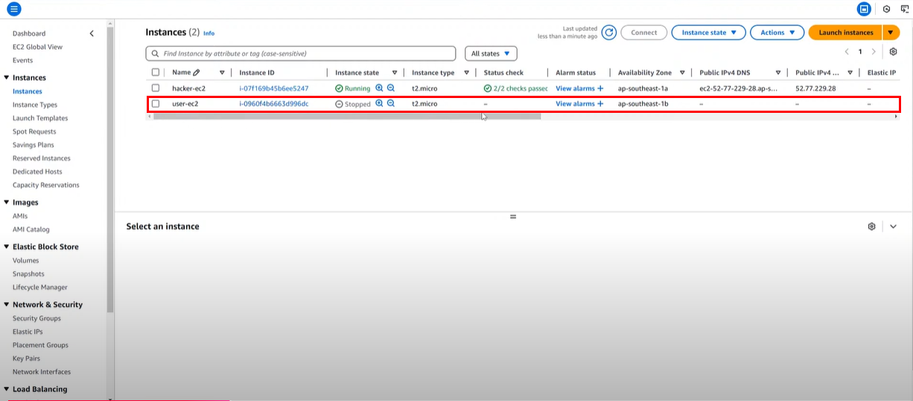
In this article, we perform a test by scanning the port (port scan) for GuardDuty to detect and use Lambda to temporarily stop the EC2 machine. You can also try other methods such as DDoS attack or many other forms to test the detection ability of GuardDuty as well as use Lambda to handle many different methods.